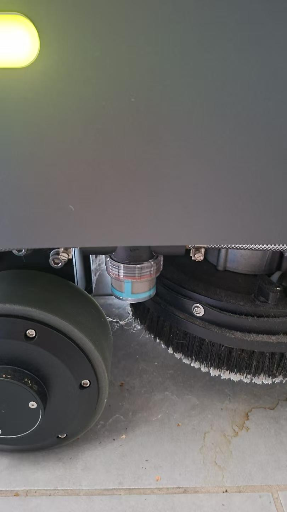
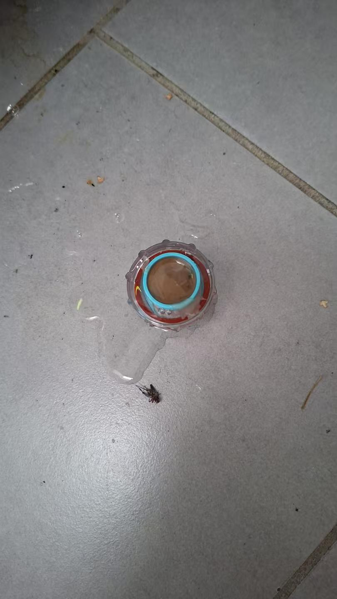
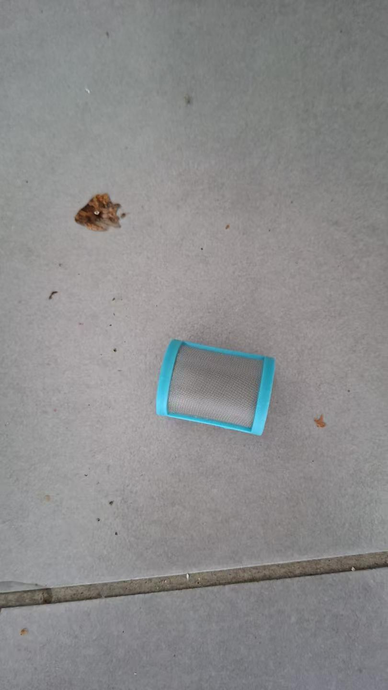
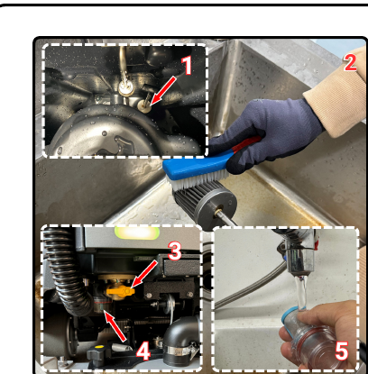
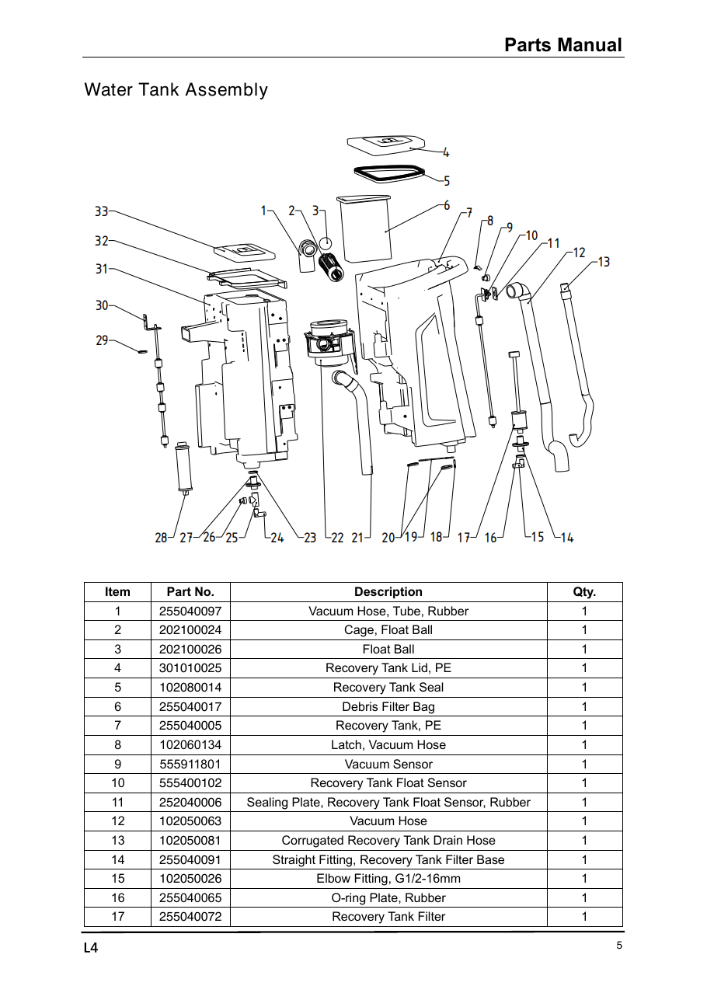

已拆出滤网后的清洁与检查建议
以下是针对照片中结构的通用清洁建议，并非厂家已确认的 L4 拆卸规程。
- 用清水清除网孔与杯底沉积物，必要时轻用软刷；不要刺穿或压变形金属网。
- 检查蓝色框、金属网、透明杯和红色密封圈是否破损；记录网芯与密封圈原位置。
- 按匹配组件的说明装回，确保密封圈不扭曲、不夹伤；补水后先静态查漏，再测试刷盘区域出水。
CENOBOTS L4 · 图文操作指南
从顶部开盖、滤芯清洗，到吸水扒、刷盘与复装检查。按厂家视频截图逐步对照，快速找到要看的片段。

先确认部件与水路
现场参考照片展示了一只位于轮子与刷盘附近的小滤杯。它与清水箱内的灰色大滤芯、污水箱内的蓝色浮球罩分别列出，避免维护时认错。

现场参考照片 · 点击查看原图

现场参考照片 · 点击查看原图

现场参考照片 · 点击查看原图
以下是针对照片中结构的通用清洁建议，并非厂家已确认的 L4 拆卸规程。
| 位置 / 部件 | 已确认的维护 | 拆装边界 |
|---|---|---|
| 照片中的底部蓝边网芯 | 可从透明杯中单独取出；已拆出后的网孔、杯体、密封需清洁检查。 | 清水管路用途据提供者说明；L4 适配、旋向、阀门与扭矩未核实。 |
| 黄色框垃圾滤袋 | 顶部污水箱内。取出、清空、清洗后装回。 | 视频约 00:50–01:05；末段装回。 |
| 蓝色浮球罩 / 栅格件 | 冲洗罩体与周边浮球、液位部件。 | 本次未找到完整拆装演示。 |
| 污水箱灰色滤芯 | 先排空污水箱，再取出刷洗、复装。 | 视频约 01:45–02:15；与蓝色罩分开。 |
| V1.3 图中的污水滤杯 | V1.3 维护图：先关黄色阀，再拆杯清洗。 | 按实物确认配置；与箱内滤芯分开。 |
| 清水箱灰色滤芯 | 排空清水箱，顶部开盖后取出、刷洗、装回。 | 清水箱视频约 00:18–00:46。 |
按部位完成，每步都检查复装
日常清洁；箱内灰色滤芯按周维护

清水滤芯：按月清洁；水质和工况差时提前检查
2024.07 手册另述选配水回收滤组，需要专用工具并按规定换芯；仅对实际装有该配置的机器适用，不能与这里的灰色清水滤芯混为一项。
每天清洁，检查积污、缺口、变形与磨损
每天检查，按磨损状况成对更换
使用厂家手动吸水模式，单独进行
按钮打开厂家 Google Drive 原视频。上面的时间点用于定位片段；如果 Drive 暂时无法播放，可先按图文查看并在 Drive 页面重试。
以下勾选仅供当前页面现场自检，刷新即清空，不代表已生成或保存正式服务记录。
本页覆盖清洁与常规复装验证。2024.07 手册印刷页 27 将年度吸水电机更换、刷盘电机检查／更换列为受训人员作业。应按本机版本及厂家当前要求核对；仅完成本页清洗不能认定年度维保全部完成。
视频截图来自上述厂家视频，保留原视频文字；三张底部小滤芯照片由资料提供者补充，机型版本待核对；部件图来自 L4 Parts Manual。本页中文、英文和德文为整理说明，实际界面文字以机器为准。
印刷页 27–32：维护计划、水箱、吸水扒和刷盘。
印刷页 5–6：水箱组件。浮球罩 202100024、浮球 202100026；实际型号和版本须核对。
六段原视频；保留厂家原文件入口。
